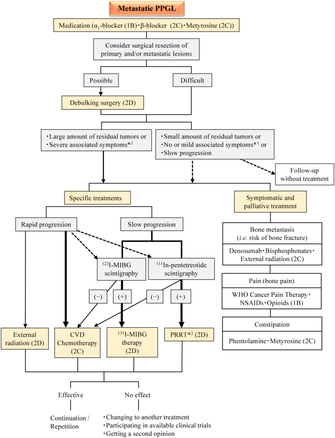
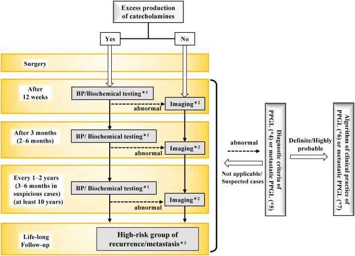
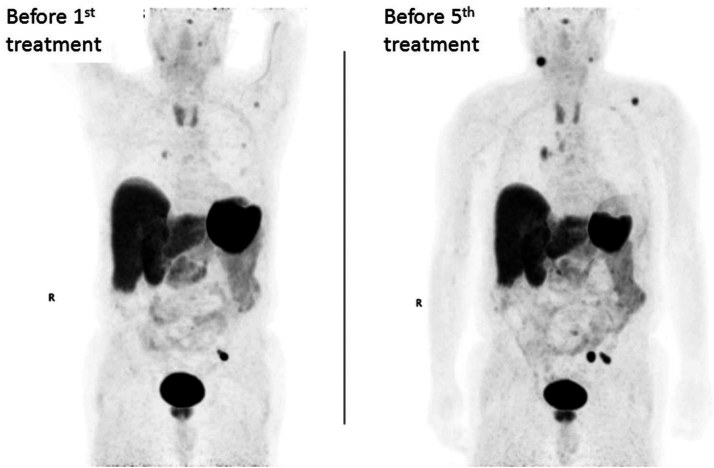
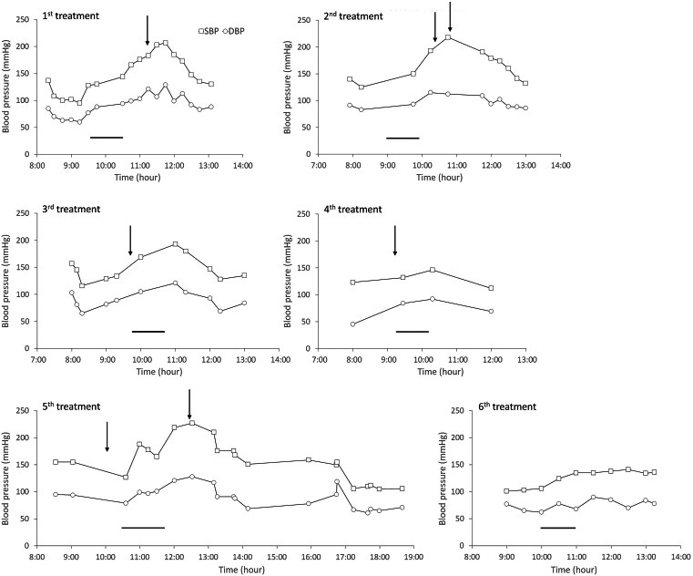

177 — Điều trị & theo dõi u tủy thượng thận – u cận hạch (PPGL): alpha-block, phẫu thuật, PRRT/MIBG & lịch theo dõi / Pheochromocytoma–paraganglioma: treatment and surveillance
Tags: pattern:khoi-thuong-than pattern:paraganglioma vung:thuong-than vung:paraganglia score:RECIST protocol:alpha-block protocol:PRRT-MIBG incidentaloma:u-thuong-than
Mức chắc chắn (certainty): tổng hợp y văn (literature synthesis) — guideline Nhật 2025, review gây mê chu phẫu 2026, review điều trị toàn thân 2026 và ca PRRT 2026; số liệu lấy trực tiếp từ bài gốc, không suy diễn.
Câu chốt: Với PPGL, thuốc điều trị đầu tiên không phải thuốc hạ huyết áp — mà là alpha-block đủ lâu để "mở khóa" mạch và bù thể tích. Mổ là cách duy nhất chữa khỏi, nhưng mổ khi chưa khóa alpha = nguy cơ cơn tăng huyết áp lúc chạm u và sốc sau khi thắt tĩnh mạch thượng thận. Sau mổ, bệnh có thể tái phát hàng chục năm — theo dõi là một phần của điều trị, không phải thủ tục hành chính.
1. Tổng quan — vì sao phải "khóa catecholamine trước, cắt u sau"
- Bệnh học (pathology): u tủy thượng thận (pheochromocytoma, PCC) và u cận hạch (paraganglioma, PGL) cùng xuất phát từ tế bào ưa crôm (chromaffin cells). Khoảng 40% trường hợp mang đột biến dòng mầm (germline), hay gặp RET, VHL, NF1, SDHB/SDHD; di truyền quyết định nguy cơ đa ổ, hai bên và tái phát. Theo WHO 2022, mọi PPGL đều được xếp là u có tiềm năng ác tính; chỉ gọi di căn khi thấy tổn thương ở mô không ưa crôm (xương, phổi, gan, hạch).
- TẠI SAO alpha-block trước, beta-block sau: catecholamine cao kéo dài gây co mạch và giảm thể tích nội mạch; đồng thời thụ thể alpha bị "khóa xuống thang" (downregulation). Khi bắt đầu chẹn alpha, mạch giãn ra và thể tích "lộ" ra thiếu → phải bù muối/nước. Nếu chẹn beta đơn thuần trước, mất tác dụng giãn mạch beta-2 ở mạch ngoại vi trong khi alpha còn nguyên → tăng huyết áp dữ dội, phù phổi, cơn kịch phát. Vì vậy quy tắc bất biến: không bao giờ khởi đầu bằng beta-blocker đơn thuần.
- TẠI SAO sốc sau khi cắt u: khi thắt tĩnh mạch thượng thận, nguồn catecholamine tắt đột ngột trong lúc mạch vẫn còn giãn do alpha-block → giãn mạch, tụt huyết áp, phản ứng viêm (vasoplegia). Đây là lý do phải bù thể tích trước mổ, theo dõi huyết áp xâm lấn và chuẩn bị vận mạch.
- TẠI SAO metyrosine (metyrosine): ức chế tyrosine hydroxylase — enzym giới hạn tốc độ tổng hợp catecholamine — nên làm giảm sản xuất catecholamine, khác với alpha-block chỉ chặn tác dụng. Dùng khi alpha-block không đủ, không dung nạp, hoặc trước can thiệp có nguy cơ giải phóng catecholamine lớn (PRRT, nút mạch, u to).
Ngưỡng định lượng bắt buộc (mục 1 & 4):
- Thời gian chuẩn bị alpha-block: 7–14 ngày, nhiều trung tâm nhắm ≥ 10 ngày — đủ bù thể tích và hồi phục tổn thương cơ quan đích.
- Mục tiêu huyết áp – tần số: ngồi < 130/80 mmHg, nhịp ngồi 60–70 lần/phút, đứng huyết áp tâm thu ≥ 90 mmHg, nhịp đứng 70–80 (Endocrine Society; đạt xu hướng, không phải một lần đo).
- Ngưỡng mổ nội soi: u ≤ 6 cm, không xâm lấn; > 6 cm hoặc nghi xâm lấn → mổ mở.
- Bảo tồn vỏ thượng thận: u ≤ 5 cm, PCC hai bên/thể gia đình — giảm phụ thuộc corticoid suốt đời; tái phát tại thượng thận cùng bên 13%.
- Di căn: PCC 10–15%, PGL 35–70%; trung vị sống 7–22 năm — PGL và SDHB có nguy cơ cao nhất.
- Tái phát sau cắt: thể lẻ tẻ 14,7%; cluster 1 (SDHx) 47,5%; cluster 2 14,9%; 29,1% phát hiện ở năm thứ 10, 17,7% ở năm thứ 15. Yếu tố nguy cơ: noradrenaline trội, u ≥ 5 cm, ngoài thượng thận, trẻ, đột biến gen.
- Theo dõi tối thiểu: 10 năm; suốt đời nếu nguy cơ cao — không có "khỏi hẳn" để xuất viện vĩnh viễn.
2. Mẫu hình bệnh cảnh + gamut quyết định điều trị
Không phải mọi PPGL đều đi chung một đường. Trước khi chọn thuốc/mổ, hãy xếp bệnh nhân vào một trong năm bệnh cảnh (clinical scenario):
- A — PCC/PGL khu trú, lẻ tẻ, chức năng: alpha-block → cắt tuyến thượng thận toàn phần qua nội soi (≤ 6 cm). Đây là nhóm tiên lượng tốt nhất nhưng vẫn phải theo dõi ≥ 10 năm.
- B — Thể gia đình / hai bên / đa ổ (RET, VHL, NF1, SDHx): ưu tiên phẫu thuật bảo tồn vỏ khi u ≤ 5 cm; mổ bên có u trước, giữ vỏ bên còn lại; tầm soát cả gia đình và các u phối hợp (ung thư giáp thể tủy trong MEN 2, u mạch võng mạc/tủy trong VHL).
- C — Di căn hoặc tái phát: không mổ "bằng mọi giá". Chọn theo khối u còn lại – triệu chứng – tốc độ tiến triển: theo dõi, mổ giảm thể tích, PRRT, 131I-MIBG, hóa trị CVD, temozolomide, TKI hoặc belzutifan.
- D — Khủng hoảng (crisis), xuất huyết/nhồi máu trong u: ổn định trước; mổ cấp cứu chỉ khi không thể ổn định; nếu có sốc tim, cân nhắc hỗ trợ tuần hoàn cơ học (xem bài 167).
- E — Thai kỳ & trẻ em: alpha-block vẫn là nền tảng; thời điểm mổ khác nhau theo tam cá nguyệt/lứa tuổi (bài 169).
Gợi nhớ "4T" của điều trị PPGL: Target blockade (alpha-block đủ) · Tumor removal (mổ khi đã khóa) · Therapy for metastatic disease (chọn theo SSTR/NET/đột biến) · Tracking (theo dõi suốt đời).
3. Bảng so sánh phân biệt các lựa chọn điều trị (ma trận đối chiếu)
| Chiến lược (strategy) | Chỉ định chính | Chốt vào (rule-in) | Chốt loại (rule-out) | Hiệu quả định lượng & theo dõi |
|---|---|---|---|---|
| Cắt thượng thận toàn phần | PCC khu trú, u ≤ 6 cm, không xâm lấn | U khu trú + chức năng + đã alpha-block đủ 7–14 ngày | U > 6 cm/xâm lấn → mổ mở; di căn lan rộng → không cắt "triệt căn" | Chữa khỏi cao nhất; tái phát 14,7–47,5% tùy thể; theo dõi ≥ 10 năm |
| Cắt bảo tồn vỏ thượng thận | Thể gia đình, PCC hai bên, u ≤ 5 cm | Nguy cơ mất cả hai thượng thận + u còn vỏ lành | U > 5 cm, xâm lấn vỏ, không đảm bảo bờ → cắt toàn phần | Tái phát cùng bên 13%, di căn 1,3%; tránh suy thượng thận suốt đời |
| Alpha-block ± metyrosine | Mọi PPGL chức năng trước mổ/can thiệp; không mổ được | Huyết áp dao động + catecholamine tăng + chuẩn bị can thiệp | U không tiết catecholamine, không can thiệp → không cần | Đạt đích ngồi < 130/80, nhịp 60–70; tác dụng phụ: hạ huyết áp tư thế, nghẹt mũi |
| PRRT ¹⁷⁷Lu-DOTATATE | Di căn/tái phát SSTR dương | DOTATATE PET dương mạnh + bệnh tiến triển | SSTR âm, bệnh ổn định nhiều năm → chưa cần | Pha II: PFS 6 tháng 86,1%, PFS trung vị 19,9 tháng, OS 51,7 tháng; cohort khác kiểm soát bệnh 80%; nguy cơ cơn THA do PRRT |
| ¹³¹I-MIBG (HSA) | Di căn MIBG dương, cần kiểm soát huyết áp | MIBG-avid + tăng catecholamine | MIBG âm / SSTR dương ưu thế → PRRT hợp lý hơn | 25% giảm ≥ 50% thuốc hạ áp ≥ 6 tháng; 92% PR/ổn định; OS trung vị 36,7 tháng |
| Hóa trị CVD (cyclophosphamide–vincristine–dacarbazine) | Bệnh tiến triển nhanh, khối lớn, cần giảm nhanh | Tiến triển nhanh + cần cytoreduction | Bệnh chậm, không triệu chứng → theo dõi | Đáp ứng khối u 57%, đáp ứng sinh hóa 79% (n = 14) |
| Temozolomide | Di căn tiến triển, đặc biệt SDHB | SDHB đột biến + bệnh tiến triển | Không có dữ liệu cho thể không SDHB | PR 33%, PFS trung vị 13,3 tháng; đáp ứng chỉ ở SDHB |
| Sunitinib / cabozantinib | Di căn tiến triển, SSTR/MIBG không phù hợp | Bệnh tiến triển + không còn lựa chọn đích | Bệnh ổn định, không triệu chứng | Sunitinib: PFS 12 tháng 36% vs 19% placebo; cabozantinib: ORR 25%, PFS 16,6 tháng |
| Belzutifan (HIF-2α) | Di căn không mổ được, đặc biệt VHL/EPAS1 | Bệnh tiến triển + bối cảnh giả thiếu oxy | Không có bằng chứng cho mọi PPGL | ORR 26%, DCR 85%, PFS 22,3 tháng; 32% giảm ≥ 50% thuốc hạ áp |
| Theo dõi không điều trị | Di căn nhỏ, không triệu chứng, tiến triển chậm; HNPGL không chức năng | Không triệu chứng + khối nhỏ + chậm/không tiến triển | Tiến triển nhanh, triệu chứng nặng, chèn ép → phải can thiệp | HNPGL lớn 0,4–1,6 mm/năm; theo dõi MRI/DOTATATE định kỳ |

Lưu đồ PPGL di căn: kiểm soát catecholamine → cân nhắc mổ giảm thể tích → chọn theo tốc độ tiến triển và hình ảnh chức năng (MIBG vs DOTATATE) → CVD/PRRT/MIBG/xạ trị; nhánh xương dùng denosumab/bisphosphonate + xạ ngoài. Nguồn: Tanabe A et al., Endocrine Journal 2026 (PMC12819074), Fig. 8, CC BY-NC-ND 4.0 — giữ nguyên bản, không chỉnh sửa.4. Protocol điều trị – theo dõi
4.1. Chuẩn bị trước mổ (7–14 ngày)
- Alpha-block: phenoxybenzamine 10 mg mỗi 8–12 giờ, tăng dần; hoặc doxazosin 2–4 mg mỗi 8–12 giờ. Tăng liều mỗi 3–4 ngày theo huyết áp và mức hạ huyết áp tư thế nhẹ.
- Beta-block: chỉ thêm sau khi đã chẹn alpha, khi nhịp nhanh dai dẳng; mục tiêu nhịp ngồi 60–70 lần/phút.
- Metyrosine: dùng khi alpha-block không đủ hoặc trước can thiệp nguy cơ cao; theo dõi sỏi thận/tinh thể niệu (khuyến khích uống ≥ 2 L/ngày).
- Bù thể tích: chế độ ăn nhiều muối + uống đủ nước; cá thể hóa ở người suy tim/bệnh cơ tim do catecholamine (bài 167) — bù quá mạnh có thể gây phù phổi.
- Đích: huyết áp ngồi < 130/80 mmHg, huyết áp tâm thu đứng ≥ 90 mmHg, nhịp ngồi 60–70, nhịp đứng 70–80.
- ECG trước mổ: nhiều trung tâm yêu cầu ECG không còn thay đổi ST-T trong ≥ 1 tuần (tiêu chí Roizen) trước khi mổ.
4.2. Trong mổ
- Tăng huyết áp khi chạm u: phentolamine 5–15 mg bolus, hoặc truyền 1–6 µg/kg/phút; nicardipine 5–15 mg/giờ; nitroprusside 0,25–2 µg/kg/phút (tránh liều cao vì độc tính cyanide).
- Sau thắt tĩnh mạch/tắt nguồn catecholamine: tụt huyết áp do giãn mạch + giảm thể tích → bù dịch, rồi noradrenaline/vasopressin nếu cần; không chậm trễ vận mạch.
- Hạ đường huyết sau mổ: theo dõi glucose 48 giờ, đặc biệt ở người đái tháo đường; xử trí glucose tĩnh mạch.
4.3. Sau mổ và theo dõi dài hạn
- 12 tuần sau mổ: đo huyết áp + xét nghiệm sinh hóa (metanephrine tự do huyết tương/niệu phân đoạn).
- 3 tháng (2–6 tháng): lặp sinh hóa; nếu bất thường → chụp hình ảnh.
- Sau đó: mỗi 1–2 năm (hoặc 3–6 tháng ở nhóm nguy cơ cao), tối thiểu 10 năm; suốt đời nếu trẻ, u ≥ 5 cm, PGL, noradrenaline trội hoặc có đột biến gen.
- Hình ảnh: chỉ chụp khi sinh hóa bất thường hoặc có triệu chứng; với u không tiết catecholamine, chụp MRI/CT định kỳ theo lịch.

Lưu đồ theo dõi hậu phẫu: 12 tuần → 2–6 tháng → mỗi 1–2 năm (3–6 tháng nếu nguy cơ cao) → nhóm nguy cơ cao theo dõi suốt đời. Nguồn: Tanabe A et al., Endocrine Journal 2026 (PMC12819074), Fig. 6, CC BY-NC-ND 4.0 — giữ nguyên bản.flowchart TD
A[PPGL da chan doan] --> B{Da alpha-block du 7-14 ngay?}
B -->|Chua| C[Alpha-block + bu dich; metyrosine neu can]
C --> B
B -->|Roi| D{Co di can / xam lan?}
D -->|Khong| E[Mo noi soi neu u <= 6 cm; mo mo neu > 6 cm]
D -->|Co| F{Con chi dinh mo giam the tich?}
F -->|Co| G[Mo giam the tich + kiem soat catecholamine]
F -->|Khong| H{Chon theo SSTR / NET}
H -->|SSTR duong| I[PRRT 177Lu-DOTATATE]
H -->|MIBG duong| J[131I-MIBG]
H -->|Tien trien nhanh| K[CVD hoac temozolomide neu SDHB]
H -->|Cham, khong trieu chung| L[Theo doi dinh ky]
E --> M[Theo doi: 12 tuan, 3 thang, 1-2 nam, >= 10 nam]
G --> M
I --> M
J --> M
K --> M
L --> M
4.4. Chọn can thiệp theo hình ảnh chức năng
- ⁶⁸Ga-DOTATATE PET/CT: chọn bệnh nhân PRRT; nhạy nhất cho PGL đầu–cổ và di căn SDHx.
- ¹²³I-MIBG: chọn bệnh nhân ¹³¹I-MIBG; độ nhạy thấp hơn ở di căn pheo (đặc biệt SDHB).
- ¹⁸F-FDG PET/CT: đánh giá độ hung hãn, di căn, và các tổn thương kém biệt hóa.
- Nguyên tắc: hình ảnh chức năng chọn thuốc, không chỉ để "tìm u". U SSTR dương mạnh nhưng MIBG âm → PRRT; u MIBG dương mạnh, SSTR âm → ¹³¹I-MIBG.
5. Biến thể bình thường và cạm bẫy
- Chẹn beta trước alpha = cạm bẫy chết người. Không dùng propranolol/atenolol đơn thuần để trị nhịp nhanh khi chưa chẹn alpha.
- Alpha-block quá ngắn hoặc quá dài đều có giá. Nghiên cứu 110 ca: chuẩn bị > 30 ngày và dùng doxazosin liên quan cơn tăng huyết áp kéo dài hơn, nhiều vận mạch hơn; mục tiêu thực tế là 7–14 ngày và đủ liều, không phải "càng lâu càng tốt".
- "Sinh hóa bình thường" không loại trừ PGL không chức năng — nhất là PGL đầu–cổ; chẩn đoán dựa vào hình ảnh và mô bệnh, điều trị theo nguy cơ chèn ép/chảy máu.
- PRRT có thể gây cơn tăng huyết áp do giải phóng catecholamine/tan u. Phải chẹn alpha đủ, theo dõi huyết áp trong và sau truyền; ca khó dùng metyrosine tăng liều 4 ngày trước đã ngăn được cơn ở chu kỳ sau.
- MIBG âm không có nghĩa "không còn cách" — chuyển sang DOTATATE/FDG để chọn PRRT hoặc TKI.
- Đừng nhầm "ổn định sau mổ" với "khỏi bệnh": tái phát có thể xuất hiện sau nhiều thập kỷ, đặc biệt thể gia đình. Bệnh nhân cần được cấp lịch theo dõi bằng văn bản.
- Bảo tồn vỏ không miễn phí: tái phát tại thượng thận cùng bên 13%; phải giải thích rõ lợi ích (tránh suy thượng thận) và nguy cơ mổ lại.
- Thai kỳ: alpha-block vẫn dùng được; tránh mổ trong tam cá nguyệt 1 và 3 nếu có thể; phối hợp sản – nội tiết – gây mê (bài 169).
6. Tự lượng giá — Blind Quiz
Ca 1 — Nam 75 tuổi, PPGL di căn tiến triển, đã chẹn alpha + beta. Trước và sau 4 chu kỳ ¹⁷⁷Lu-DOTATATE, DOTATATE PET thay đổi thế nào?

- Gợi ý lâm sàng: đau xương, huyết áp dao động, đã điều trị 4 chu kỳ PRRT.
- Câu hỏi: So sánh hai ảnh MIP? Có phải "càng nhiều chu kỳ càng tốt" không? Theo dõi bằng gì?
Bấm để hiện đáp án (findings + chẩn đoán)
- Dấu hiệu: ảnh bên phải (trước chu kỳ 5) xuất hiện thêm ổ bắt xạ ở cổ, hố nách và nhiều ổ mới so với ảnh bên trái → bệnh tiến triển dù đã PRRT.
- Chẩn đoán: PPGL di căn tiến triển trong khi PRRT; PRRT là điều trị kiểm soát, không phải chữa khỏi.
- Xử trí: đánh giá lại bằng RECIST + DOTATATE; cân nhắc đổi sang CVD/temozolomide/TKI/belzutifan; kiểm soát catecholamine và đau xương.
- Nguồn: Yu R et al., AACE Endocrinol Diabetes 2026, Fig. 1, PMC13043445, CC BY 4.0.
Ca 2 — Cùng bệnh nhân, huyết áp trong 6 chu kỳ PRRT. Chu kỳ nào có cơn tăng huyết áp, và vì sao chu kỳ 6 khác biệt?

- Câu hỏi: Mô tả đỉnh huyết áp tâm thu? Can thiệp nào đã thay đổi kết quả chu kỳ 6?
Bấm để hiện đáp án (findings + chẩn đoán)
- Dấu hiệu: cơn tăng huyết áp rõ ở chu kỳ 1, 2, 3 và 5 (huyết áp tâm thu tới ~220 mmHg); chu kỳ 4 và 6 không có cơn. Trước chu kỳ 6, bệnh nhân được tăng liều metyrosine 4 ngày trước truyền, không dùng thêm alpha-block ngay trước truyền.
- Chẩn đoán: cơn tăng huyết áp do PRRT (giải phóng catecholamine/tan u), dự phòng được bằng kiểm soát catecholamine đủ sâu.
- Bài học: PRRT phải có protocol theo dõi huyết áp, không truyền như hóa trị thông thường.
- Nguồn: Yu R et al., AACE Endocrinol Diabetes 2026, Fig. 2, PMC13043445, CC BY 4.0.
Ca 3 — Sau mổ PCC lẻ tẻ, u 3 cm, hết triệu chứng. Bạn hẹn theo dõi thế nào?
Bấm để hiện đáp án
- Lịch: sinh hóa + huyết áp ở 12 tuần, 3 tháng, sau đó mỗi 1–2 năm; tối thiểu 10 năm. Nếu trẻ, u ≥ 5 cm, PGL, noradrenaline trội hoặc có đột biến → theo dõi suốt đời.
- Vì sao: tái phát thể lẻ tẻ 14,7%, nhưng có thể xuất hiện 29,1% ở năm thứ 10 và 17,7% ở năm thứ 15.
- Nguồn số liệu: Tanabe A et al., Endocrine Journal 2026, PMC12819074, CC BY-NC-ND 4.0.
Bài liên quan chéo
- 168 – U tủy thượng thận & u cận hạch: chẩn đoán hình ảnh
- 167 – Biến chứng tim mạch & khủng hoảng tăng huyết áp của pheo
- 169 – PPGL ở trẻ em & thai kỳ
- 155 – Khối thượng thận tình cờ
- 199 – Xét nghiệm gen & tầm soát gia đình
Ảnh
- Nguồn + giấy phép từng ảnh:
images/CREDITS.md. - Ảnh CC BY-NC-ND (PMC12819074) giữ nguyên bản, không crop/ghép.
Không dùng để chẩn đoán độc lập khi chưa có người hướng dẫn.